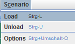
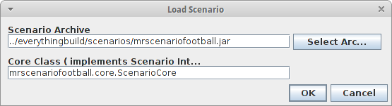
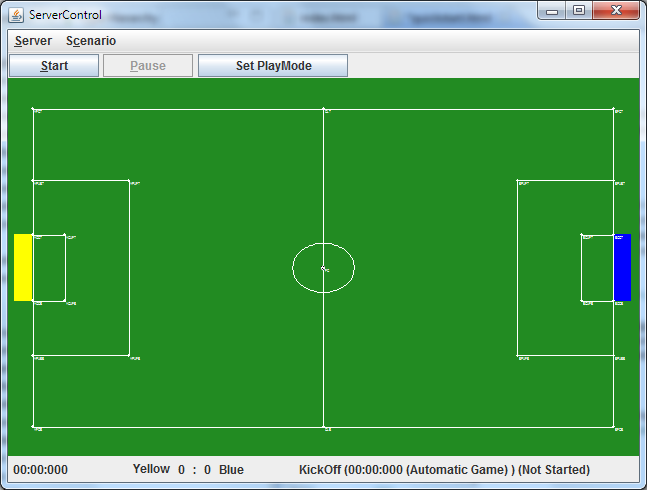

NorthernStars Mixed-Reality Gameserver
MR-Server:
This project is maintained by NorthernStars
This guide shows you how to start the MR-Server and a new simulated soccer game. It also explains how to set up connections for your Mixed-Reality AI.
All you need is to download the MR-Server from the side menue or from the github release page. After downloading the MR-Server archive, unpack it. You also have to create a Mixed-Reality AI. If you don't have one, simply use our Mixed-Reality Framework.
The MR-Server uses a default configuration file called defaultserver.config. This config file includes data about the connection settings. For simulation you don't have to edit it, but pass it as argument to MR-Server.
Create a shortcut or link (depending on your os) to the file mrserver-runnable.jar and add the following arguments
-cf defaultserver.config
Now start the MR-Server using the shortcut you created.
First you have to load a scenario. Here we'll use the default soccer scenario.
So click on Scenario > Load in the top menue of the MR-Server, to load a scenario.

A dialog called Load Scenario opens, where you can choose a scenario file and specifiy the cor class of the scenario that the server should load.
In this short guide you can use the default settings (they are specified inside the defaultserver.config) and click OK.

Now a soccer field should appear:
